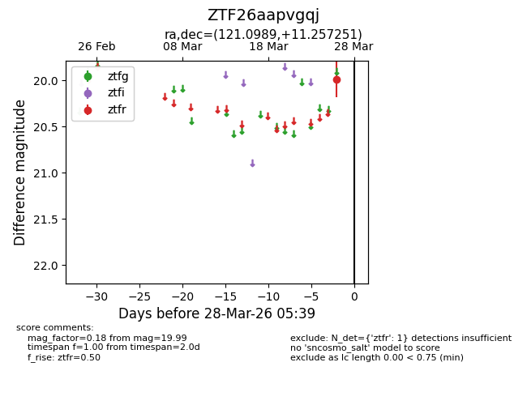
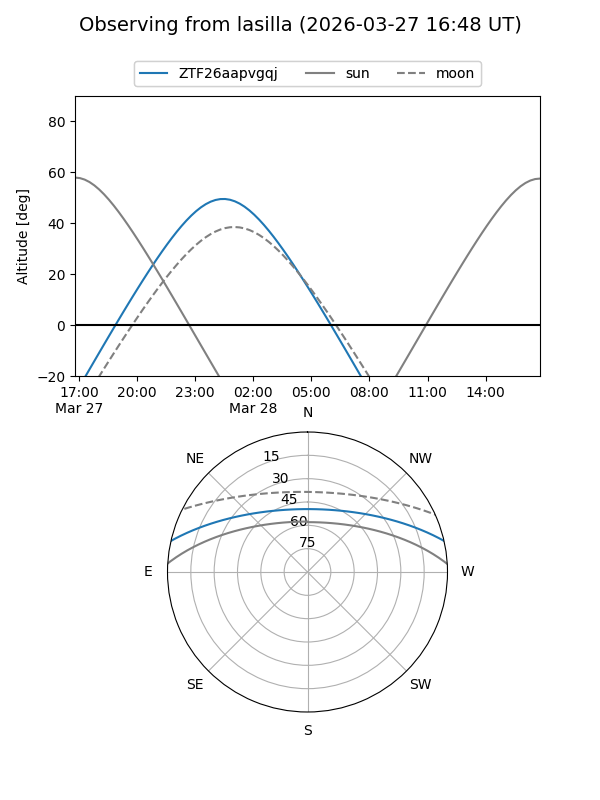
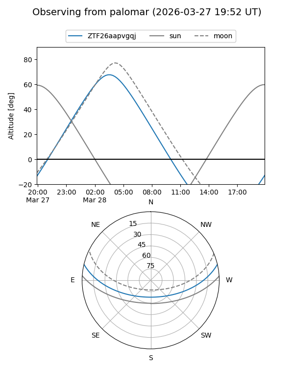

ZTF26aapvgqj
Target ZTF26aapvgqj at 2026-03-28 05:42
Aliases and brokers:
FINK: link
Lasair: link
ALeRCE: link
alt names
ZTF26aapvgqj (ztf,fink_ztf)
Coordinates:
equatorial (ra, dec) = 121.0989,+11.25725
equatorial (HMS+DMS) = 08:04:23.74,+11:15:26.11
galactic (l, b) = (210.8558,+21.23607)
Flags:
Photometry:
last ztfr=19.99
1 ztfr detections
Lightcurve

Visibility


Additional plots